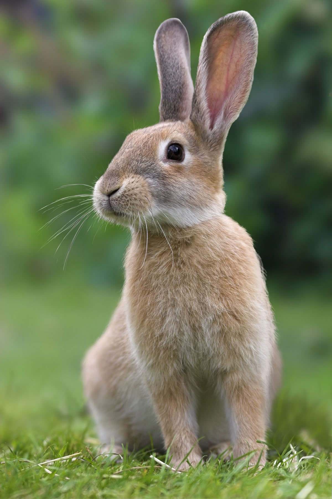
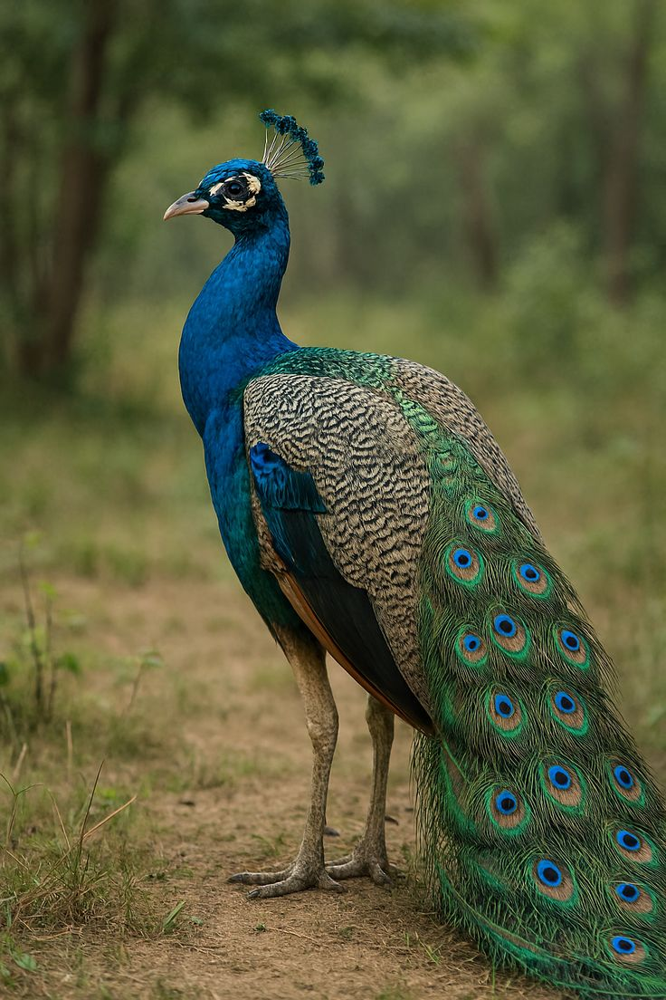
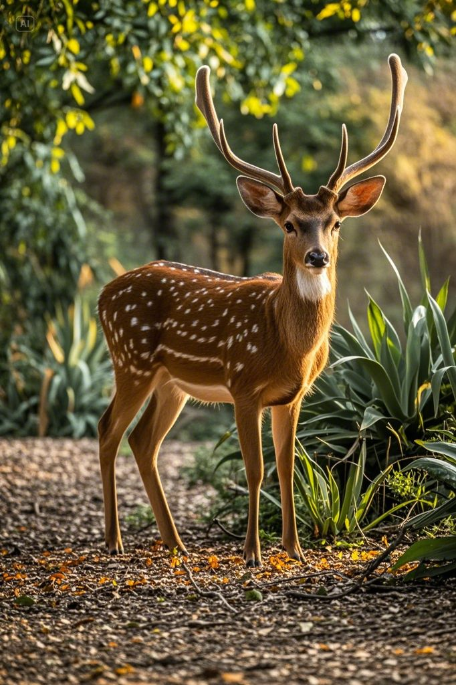
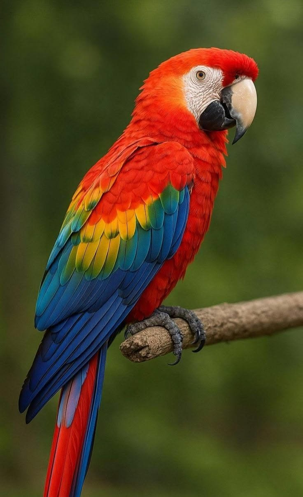

1A rabbit is a small, gentle animal with long ears, soft fur, and a short tail. Many people keep rabbits as pets, and they also live in the wild
2A peacock is a very beautiful bird known for its bright blue color and long, colorful feathers. The peacock is the national bird of India.
3A deer is a graceful wild animal that lives in forests and grasslands. Deer are known for their long legs, gentle nature, and fast running.
4A parrot is a colorful and intelligent bird. Many people keep parrots as pets because they can imitate human speech and learn simple words.